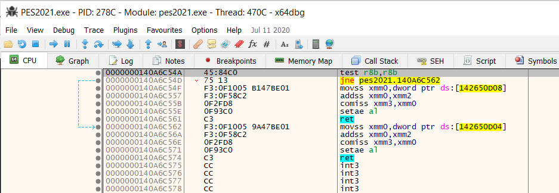
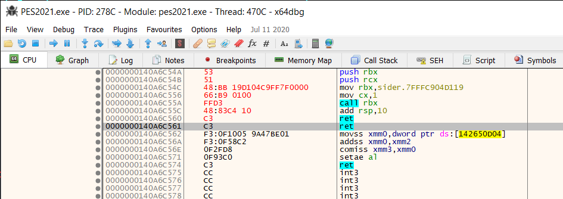

New in sider 7.3.0 is the support for Lua modules to both generate and handle custom events. These are events that are NOT generated by sider. Instead, it is the responsibility of a Lua module to do so.
The original idea of custom events belongs to FerJo75 from EvoWeb.uk forums. We worked together to research and test various aspects of this complex new feature of sider. The final implementation choices/details might be mine, but the original concept and the vision are all by FerJo75. Without him none of this would have existed.
This is a rather advanced topic, so if you really want to get a good understanding of what is going on here and how things work, be prepared to dome some extra reading outside of this guide, when necessary. There is only so much detail i can go into here, but if you feel lost and confused, don't lose heart: things are not as difficult as they look, once you start digging in.
We will be working with assembly language and even sometimes directly wich machine code instructions, as well as Lua on the other side. It can be very exciting and rewarding experience, but also very frustrating, when things do not work right away. This is a rather wild mix of high level and very low level programming, so be prepared to be patient and not allow the frustration of crashes and bugs to get the better of you ;)
With this fair warning out of the way, let's begin with tools.
One tool you will most likely need to get familiar with: x64dbg https://x64dbg.com/
This is a "swiss-army knife" of any reverse engineer. It can do simple things and also very complex ones. For our needs, it
will be helpful to assemble the hooking code (custom event generator) - translate it to machine code bytes, essentially.
Other tools you may find useful (although maybe not all of them):
When talking about a custom event, it is useful to separate it into 2 parts:
We are going to start with Event handler because it should be mostly familiar: if you had written a module before, you should have a good idea of what an event handler function is. Custom event handler is a function that you would define in your Lua module - very similar to how you would define a handler function for any "normal" event that is generated by sider. It has the following specification ("signature" in CS-speak):
function handler(ctx, event_id, registers)
The handler function is expected to return 1 value: nil or a table of registers that need to be modified. If you don't want to modify registers in any way, just return nothing or nil or an empty table. If you want to modify one or more registers, return a table with just those.
Here is an example of event handler:
function m.finish_quickly(ctx, event_id, registers)
log(string.format("custom:check_end_of_half (event_id:%s, registers:%s)", event_id, registers))
log_registers(registers)
-- set end-of-half flag
return {
-- rax is 8 bytes long.
-- set the lowest byte to 1, but keep the higher bytes as they were
rax = "\x01" .. registers.rax:sub(2,8) -- set al = 1
}
end
We register the handler function the exact same as we do with normal sider events.
Typically, inside the module's init function:
function m.init(ctx)
...
ctx.register("custom:check_end_of_half", m.finish_quickly)
...
end
The name of the custom event always starts with "custom:" prefix, but after that it is up to the module author to come up with a good name. It must be unique across all Lua modules that you are using
Event generator is the code that runs as part of the game process at a very specific moment. For example, let's say that through some research and experiment, you have found a place in the game process (PES2021.exe), where the player is shown the yellow card by the referee, and the player ID is stored in a register - let's say R10, for example. Or, another scenario could be: the game is checking whether the current half is over or not. You want to notify you Lua module when this is happening. The way to do that is patch the game process with some new logic that tells sider: "this particular event is happening right now, go tell all Lua modules that are interested in it". This new logic is the event generator.
Let's continue with the "check_end_of_half" example. Here is where the game checks whether the current half is over:

First part of the function checks for normal time, second half - for extra time. The contents of r8b register determines which type of half it is.
Now, let's say we want to patch this code and put a custom event generator here that would call back into sider in a special way so that sider calls all the event handlers that registered for our event.
For now, let's write the event generator manually, using the assembler feature of x64dbg. (Later on, we will instead have the Lua module do that, but right now, it is useful to see how this is done using the debuggger). Starting right at that first instruction, press "Space" and write the code as shown in the screenshot below. x64dbg will highlight the assembled bytes in red color:

This little code snippet shows how to use sider's custom event API (Application Programming Interface).
Essentially, we need to call sider's "sider_custom_event_rbx_hk" function. It is
written in assembly language, and it expects to receive two values on the stack:
The address of the "sider_custom_event_rbx_hk" function is not fixed, it can change from one game session to another, so it cannot be hardcorded to some number, but instead needs to be determined at run-time - we will see how to do that very soon, when we have Lua module write the event generator code, instead of doing it manually.
Same goes for event id. Those are fixed, but instead "allocated" by sider, based on custom event name. In our example this name is custom:end_of_half_check. Sider provides is a utility function to find out what the event id is for any given custom event name.
After the call is done, stack needs to be restored to its original state, so the two values we pushed on to it, need to popped back, but we don't need the actual values, so we do:
add rsp, 10h
Lastly, depending on the specific scenario, you may or may not need to write code to compensate for the fact that we've overwritten some original game code. In this particular scenario, we don't actually need to do that, because the end effect of the original function was to set register al either to 0 or to 1, where 1 means: end of the half. Since our event handler returns the registers it wants sider to modify, it can return modified rax if it chooses to do so. Nothing else is needed here.
Now, it was mentioned that two things are not really known until the game is running: the address of "sider_custom_event_rbx_hk" function, and which custom event id corresponds to which custom event name. That is the first reason why you don't want to manually patch the code, using a debugger, such as x64dbg. Another reason is that it is just too much hassle to do so every time, and we simply want to start the game as we normally would, and not worry about all the hackery.
So we need to have the game patched on-the-fly with the event generator code. It is actually not very difficult to do, thanks to the already existing facilities in sider. The memory library comes in handy - first to find the right spot in the game process, and then to patch it. Let's see how it is done for out example of custom event called "custom:check_end_of_half"
First, we need to determine the address at which we need to patch the game. While you could hardcode it to a specific value (that you had found during your research), i don't recommend doing it that way, because different versions of PES2021.exe will slightly different address. Instead, what you can do is use memory.search_process function to dynamically locate the spot you are interested in, because it is usually very easy to find a unique sequence of bytes right at the place you are looking for, or maybe slightly before or after. This is how we can do it:
-- find the place where want to hook
--[[
0000000140A6C54A | 45:84C0 | test r8b,r8b |
0000000140A6C54D | 75 13 | jne pes2021.140A6C562 |
0000000140A6C54F | F3:0F1005 B147BE01 | movss xmm0,dword ptr ds:[142650D08] |
0000000140A6C557 | F3:0F58C2 | addss xmm0,xmm2 |
0000000140A6C55B | 0F2FD8 | comiss xmm3,xmm0 |
0000000140A6C55E | 0F93C0 | setae al |
0000000140A6C561 | C3 | ret |
0000000140A6C562 | F3:0F1005 9A47BE01 | movss xmm0,dword ptr ds:[142650D04] |
0000000140A6C56A | F3:0F58C2 | addss xmm0,xmm2 |
0000000140A6C56E | 0F2FD8 | comiss xmm3,xmm0 |
0000000140A6C571 | 0F93C0 | setae al |
0000000140A6C574 | C3 | ret |
--]]
local addr = memory.search_process("\xf3\x0f\x58\xc2\x0f\x2f\xd8\x0f\x93\xc0\xc3\xf3\x0f\x10\x05")
if addr == nil then
error("code location not found")
end
addr = addr - 0x57 + 0x4a
log("code location: " .. memory.hex(addr))
The top part is just some comments that are helpful to see what code we are searchin for. Then the call to memory.search_process function does the search. Notice, that we are looking for the byte sequence that starts a little bit later, not at the exact place that we want to start modifying the code. So, then once that location is found, we adjust it to point to the actual starting place (test r8b, r8b instruction).
Now that we have the location, let's put our event generator code in there:
-- get event_id for our custom event name
local event_id = ctx.get_event_id("custom:check_end_of_half")
-- place event trigger right there, overwriting existing code
memory.write(addr,
"\x53" .. -- push rbx
"\x51" .. -- push rcx
"\x48\xbb" .. memory.pack("u64", ctx.custom_evt_rbx) .. -- mov rbx, {sider_custom_event_rbx_hk}
"\x66\xb9" .. memory.pack("u16", event_id) .. -- mov cx, {event_id}
"\xff\xd3" .. -- call rbx
"\x48\x83\xc4\x10" .. -- add rsp,10h
"\xc3" -- ret
)
Three main things of note here:
You will notice the rest of the machine code is basically taken from our earlier exercise, when we were assembling the event generator code in x64dbg. Now that machine code comes in handy :).
And that is pretty much all there is to it!
Well, not really, but hopefully this guide gives you a good starting point on how to create your own custom events.
Included with sider are two example modules: customevt1.lua and customevt2.lua
The first one - customevt1.lua - is essentially the complete module that puts together all the code snippets and concepts that were discussed above in this guide into a working module that both generates a custom event and also handles it. The event generator triggers an event called "custom:check_end_of_half", when the game actually checks if the half is over or not yet. Then event handler modifies rax register to set its lowest 8 bits ("AL") to 1, which tells the game that the half is over. So, basically, as soon as each half of the match starts, it pretty much finishes right away. Yes, I know, it is not very useful... but it demonstrates how custom events work.
The second one - customevt2.lua - works pretty much exactly the same way: short-circuits each half of the match. The only difference is that it uses yet another technique, when patching the game process with the event generator code: it allocates a new code page in the process memory - using new memory.allocate_codecave function, puts the event generator code there, then does an indirect jump to that address. This is useful, when you don't have too many bytes to work with in the original location and you want as small of a footprint as possible for a jump out to the event generator code.